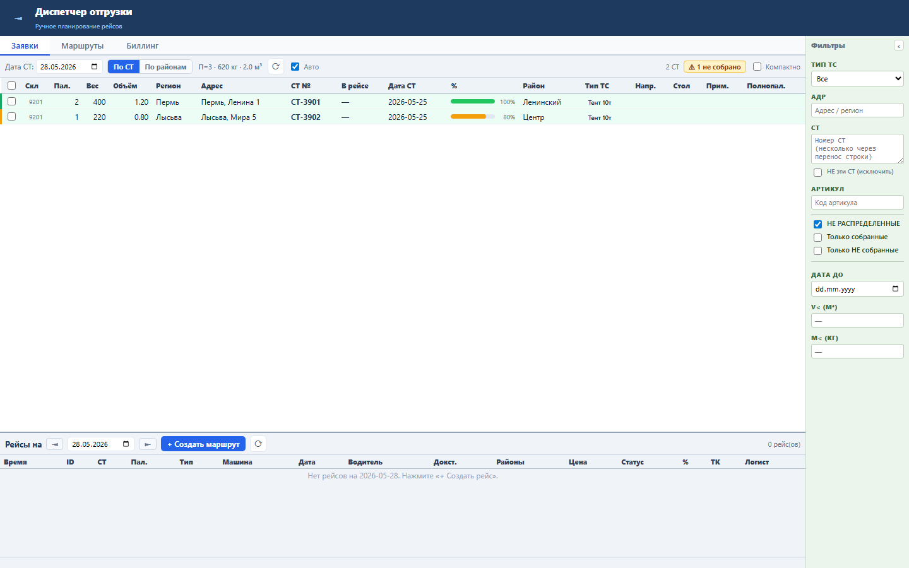
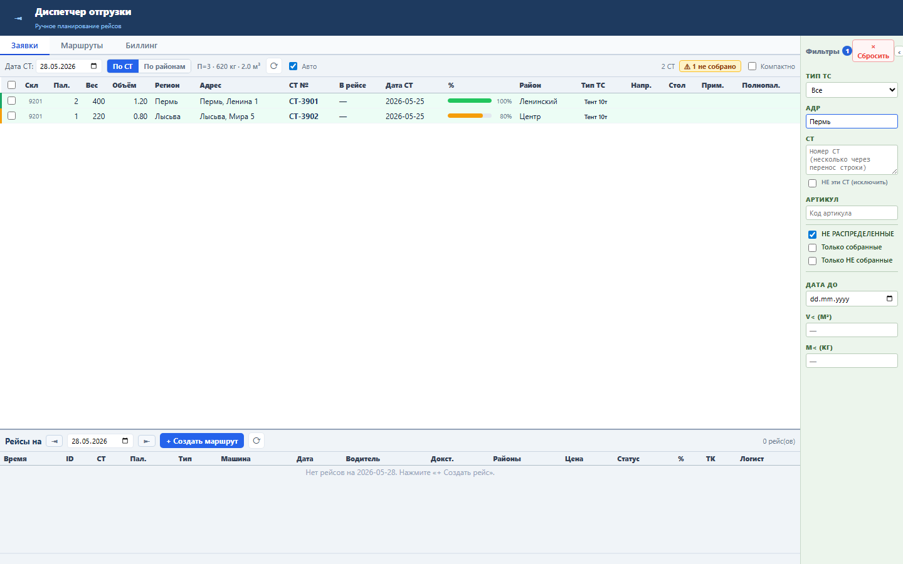

Блок помогает диспетчеру видеть, что список СТ ограничен фильтрами, и быстро возвращать экран к стандартному состоянию.
Фильтры живут в клиентском состоянии: адрес, номер СТ, исключение СТ, собранность, нераспределённость, дата до, ограничения веса и объёма, тип ТС, артикул. Бейдж считает только значения, отличающиеся от стандартных.
При активном фильтре появляется числовой бейдж и кнопка «× Сбросить». После сброса все поля возвращаются к дефолту, а бейдж исчезает.


Проверка: functional, UI smoke и load gate пройдены.